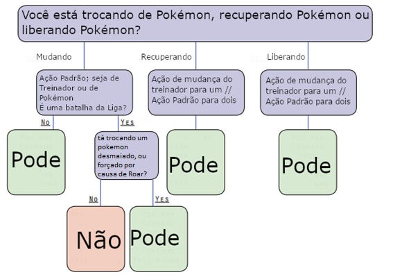

Capítulo Anterior: Jogando o Jogo
Combate
Tipos e Contextos de Combate
Existem dois contextos principais em que o combate ocorre no PTU e, acredite ou não, isso é realmente muito importante para a forma como você trata a mecânica de combate e a forma como certas partes do combate funcionam.
O primeiro contexto importante é, claro, nas batalhas Pokémon sancionadas pela Liga ou nas batalhas casuais que seguem as regras e regulamentos da Liga. Nessas batalhas, geralmente não é correto que os Treinadores interfiram diretamente, como atacando os Pokémon de seus oponentes ou usando poderes sobrenaturais para influenciar o andamento da batalha. Consulte as Diretrizes e Legalidade das ligas.
O outro contexto principal compreende todas as outras lutas de “contato total” onde as regras e regulamentos da Liga não se aplicam, incluindo encontros com Pokémon selvagens, lutas contra criminosos inescrupulosos e outras batalhas nas quais os Treinadores participariam diretamente e até seriam alvos de ataque. (Sim, você pode cair na porrada com um Pokémon)
Tanto os Pokémon de Iniciativa quanto os de Troca funcionam de maneira ligeiramente diferente dependendo do tipo de combate, a fim de refletir o diferente papel do Treinador no conflito. Trocar de Pokémon é um pouco mais difícil nas batalhas da Liga para evitar que os Treinadores simplesmente troquem o tempo todo em uma partida oficial para ganhar vantagem, por exemplo. Ambos os tipos de combate provavelmente aparecerão na maioria dos tipos de campanha, e os Mestres devem ter o cuidado de avisar os jogadores se um tipo de combate será muito mais prevalente que o outro.
Por exemplo, em uma campanha Pokémon comum, os Ace Trainers e Commanders terão a chance de brilhar em Ginásios e torneios, mas os Martial Artists serão mais capazes de se manter firmes quando uma equipe criminosa atacar ou quando Pokémon selvagens estiverem furiosos.
No entanto, numa região onde há muito pouca atividade criminosa e até mesmo os Pokémon selvagens são relativamente domesticados, os Treinadores especializados em lutas de contacto total não se sentirão tão úteis.
Em cada rodada de combate, os jogadores podem realizar dois turnos: um para seu Treinador e outro para um Pokémon. Mesmo que seu Treinador seja nocauteado ou incapacitado, eles ainda terão a vez de seus Pokémon e vice-versa.
Iniciativa
O combate em Pokémon Tabletop United ocorre em uma sequência de rodadas de 10 segundos, onde os combatentes se revezam agindo na ordem de seus valores de Iniciativa. Na maioria das situações, a Iniciativa de um Pokémon ou de Treinador é simplesmente seu Atributo de Velocidade, embora Itens, Recursos, Movimentos e outros efeitos possam modificar isso.
Durante partidas de Torneio e outras Batalhas da Liga em que o Treinador não participa diretamente da luta, todos os Treinadores devem realizar seus turnos, primeiro, antes de qualquer ação do Pokémon. Apenas nas Batalhas da Liga, os Treinadores declaram suas ações na ordem da velocidade mais baixa para a mais alta, e então as ações acontecem e são resolvidas da velocidade mais alta para a mais baixa. Isso permite que os Treinadores reajam mais rapidamente às mudanças e táticas do oponente. Depois disso, todos os Pokémon agem na ordem da velocidade mais alta para a mais baixa.
Em partidas de “contato total”, encontros selvagens e outras situações em que os Treinadores estão diretamente envolvidos na luta, todos os participantes simplesmente seguem em ordem, da velocidade mais alta para a mais baixa.
Empates em Iniciativa devem ser resolvidos com uma rolagem de d20. Os combatentes podem escolher manter sua ação até um valor de Iniciativa inferior especificado, uma vez por rodada. Alguns efeitos no PTU duram “uma rodada completa”. Isso significa simplesmente que eles duram até a próxima rodada do jogador que realizou o efeito.
Tipos de Ação
Durante cada rodada de combate, cada participante pode realizar uma Ação Padrão, uma Ação de Mudança e uma Ação Rápida em seu turno, em qualquer ordem. Além disso, eles podem realizar qualquer número de Ações Livres, embora as ações com um Gatilho só possam ser ativadas uma vez por Gatilho.
Como observação importante, não importa o tipo de ação listado nesta seção, geralmente os Treinadores não precisam gastar ações logo no início do combate para sacar uma arma ou enviar seu primeiro Pokémon para a luta. É simplesmente tedioso e não acrescenta nada ao jogo, e nas lutas contra outros Treinadores torna-se apenas uma taxa de ação que ambos os lados têm que pagar. A exceção, claro, são as emboscadas e ser pego de surpresa.
Ação Padrão
Movimentos e muitos Recursos exigem uma Ação Padrão durante seu turno para serem ativados e usados. Exemplos do que você pode fazer com uma Ação Padrão:
- Usar um movimento
- Usar um ataque de luta
- Recuperar e usar um item de uma mochila ou similar em um alvo
- Jogar uma Pokébola para capturar um Pokémon selvagem
- Desenhar uma arma ou mudar de uma arma para outra.
- Usar a Pokédex para identificar um Pokémon
- Você pode desistir de uma Ação Padrão para realizar outra Ação Rápida
- Você pode desistir de uma Ação Padrão para realizar outra Ação de Troca, mas isso não pode ser usado para Movimento se você já tiver usado sua Ação de Mudança normal para Movimento. No entanto, pode ser usado para ativar recursos ou efeitos que exigem uma ação de deslocamento.
- Usar manobras de combate.
Ação de Troca
A Ação de Troca é a ação mais direta durante o turno de um Pokémon ou Treinador; é simplesmente usado para movimento na maioria das vezes. Os Treinadores podem entregar a outros Treinadores um pequeno item que tenham em mãos como parte de uma Ação de Troca, desde que o aliado esteja adjacente no início ou no final do turno. Um Treinador também pode sacrificar sua Ação de Troca para realizar outras ações:
- Retornar um Pokémon ou enviar um Pokémon
- Retornar um Pokémon desmaiado e enviar um Pokémon substituto
Ação Livre
Muitos recursos podem ser ativados como Ações Livres. Recursos com gatilhos geralmente são ações gratuitas. Você pode ativar quantas Ações Livres quiser ou quando elas forem acionadas.
Ação Rápida
Os Treinadores têm exatamente uma Ação Rápida por rodada, e ela só pode ser usada em seu turno. Muitos recursos são ações rápidas.
Ação Estendida
As Ações Estendidas levam pelo menos alguns minutos para serem concluídas, dependendo da tarefa. Se não for especificado, reserve pelo menos alguns minutos com concentração adequada à tarefa. Simplesmente, essas ações não podem ser realizadas no meio do combate.
Ação Completa
Alguns recursos são ações completas. Ações Completas usam tanto sua Ação Padrão quanto sua Ação de Mudança por um turno. As ações Respirar, Coup de Grâce e Interceptar são todas Ações Completas.
Ação Prioritária
Se o usuário ainda não tiver agido neste turno, uma ação com a palavra-chave Prioridade pode ser declarada para agir imediatamente; o usuário realiza o turno completo, ignorando a iniciativa. Isso conta como a vez deles na rodada. Uma ação prioritária não pode ser declarada durante o turno de outra pessoa; deve ser declarado entre turnos. A prioridade também vem nas variedades Prioridade (Limitada) e Prioridade (Avançada). A palavra-chave Prioridade (Limitada) é como Prioridade, exceto que o usuário não pode realizar o turno completo; eles só podem realizar a ação que tem Prioridade e realizar o resto do turno em sua própria Contagem de Iniciativa. Por exemplo, os pedidos são prioritários (limitados), o que significa que o usuário usa apenas sua ação padrão e não realiza um turno completo. As ações prioritárias (avançadas) não exigem que o usuário não tenha agido naquele turno; se o fizeram, simplesmente desistem da sua vez na rodada seguinte.
Ação de Interrupção
Movimentos de Interrupção podem ser declarados no meio do turno de outro combatente para permitir que o usuário execute uma ação. Eles funcionam de forma semelhante aos efeitos de Prioridade (Avançado, Limitado), pois permitem apenas que você execute a ação que tem Interrupção e não um turno completo.
Comandando Pokémon
Basicamente, quando surge a iniciativa de combate de um Pokémon, basta deixar o jogador decidir o que o Pokémon faz. Você não precisa anunciar a ação do seu Pokémon durante o turno do treinador. Os Pokémon podem fazer o seguinte com uma Ação Padrão:
- Use um movimento ou ataque de luta
- Use manobras de combate
- Ative um efeito que requer uma ação de mudança. Isso não pode ser usado para Movimento.
- Use Habilidades, Capacidades ou faça Testes de Perícias que exijam Ações Padrão
- Recupere-se em uma Pokébola para trocar
- Pegar Itens Retidos Além disso, os Pokémon podem derrubar a maioria dos Itens Retidos usando uma Ação de Mudança, embora isso varie.
Obs: O tópico Pokémon “não comandados” em geral é um pouco complicado. Como Mestre, você não deve ser muito rígido ao “comandar” apenas um Pokémon por vez; seria ridículo que um treinador não pudesse passear com todos os seus Pokémon porque “apenas um pode mudar de cada vez”. O objetivo é não permitir que os Treinadores tenham uma vantagem injusta na batalha. Sinta-se à vontade para controlar Pokémon “não comandados” da maneira que você escolher para atingir esse objetivo e fazer sentido.
Você também pode criar eventos especiais da Liga de Batalha Dupla ou Tripla, onde os Treinadores podem comandar dois ou três Pokémon ao mesmo tempo dentro desses eventos, sem a necessidade de Recursos como o Focused Command. Outro lugar onde você pode querer quebrar as regras quando se trata do número de turnos de Pokémon por rodada é quantos Pokémon um vilão ou outro NPC pode comandar por vez. Lembre-se de que o limite existe por uma questão de equilíbrio do lado do PC. Se o equilíbrio do seu encontro exige que um vilão tenha vários Pokémon no campo ao mesmo tempo, vá em frente!
Troca de Pokémon
Os treinadores podem, é claro, trocar seus Pokémon em batalha, o que retorna seus Pokémon ativos atuais para sua Pokébola e envia outro Pokémon para ocupar seu lugar. Isso geralmente é feito como uma ação, mas também pode ser dividido em ações separadas de Recuperação e Liberação.
Uma troca completa de Pokémon requer uma Ação Padrão e pode ser iniciada pelo Treinador ou por seu Pokémon em suas respectivas Contagens de Iniciativa. Um treinador não pode trocar ou recuperar seus Pokémon se seu Pokémon ativo estiver fora do alcance do raio de recuperação de sua Pokébola – 8 metros. Durante uma Batalha da Liga, geralmente considera-se que os Treinadores estão sempre no alcance da Troca. Os treinadores podem trocar Pokémon desmaiados como uma ação de mudança.
Sempre que um Treinador Troca de Pokémon durante uma Batalha da Liga, ele não pode comandar o Pokémon que foi Liberado como parte da Troca pelo restante da Rodada, a menos que a Troca tenha sido forçada por um Movimento como Roar ou se ele estivesse Revocando e substituindo um Pokémon Desmaiado. As interrupções ainda podem ser usadas, mas consomem o turno do Pokémon da próxima rodada como de costume.
As ações de Recuperação e Liberação também podem ser realizadas individualmente por um Treinador como Ações de Turno. Revogar e então Liberar usando duas Ações de Mudança em uma Rodada ainda conta como uma Troca, mesmo que sejam declaradas como ações separadas, e você não pode fazer isso para chamar de novo e então Liberar o mesmo Pokémon em uma rodada. Um Treinador também pode gastar uma Ação Padrão para Recuperar dois Pokémon ou Liberar dois Pokémon de uma vez.
Se um jogador tiver um turno de Pokémon disponível, um Pokémon poderá agir durante a rodada em que foi lançado. Se a contagem de iniciativa do Pokémon já tiver passado, isso significa que eles podem agir imediatamente.
Para uma representação visual, consulte o fluxograma abaixo
Movimento e Posicionamento
Pokémon Tabletop United usa uma grade de combate quadrada. No entanto, é simples tratar distâncias e movimentos de forma abstrata se você não quiser usar um mapa. A pegada de um combatente em uma grade é determinada pelo seu Tamanho. Os combatentes pequenos e médios ocupam um quadrado de 1x1 metro. Grande é 2x2, Enorme é 3x3 e Gigante é 4x4, mas você pode optar por usar outros formatos para Pokémon que tenham formatos corporais diferentes, como serpentes. Como orientação aproximada, crie a nova forma com aproximadamente o mesmo número de quadrados totais que a forma padrão.
Por exemplo, um Steelix (Gigante) pode ter 8x2 metros, torcendo-se em diferentes formas à medida que se move no mapa. Um Aerodactyl (Enorme) é provavelmente 2x4 devido à sua grande envergadura.
O movimento é feito com Shift Actions em combate. Você pode mover um número de quadrados com uma única Ação de Deslocamento igual ao valor de sua Capacidade de Movimento relevante. Ao usar múltiplas capacidades de movimento diferentes em um turno, como usar Overland em uma praia e depois nadar na água, calcule a média das capacidades e use esse valor. Por exemplo, se um Pokémon tiver Overland 7 e Swim 5, ele poderá se deslocar no máximo 6 metros em um turno em que use ambas as Capacidades. Você não pode dividir uma Ação de Turno. Ou seja, você não pode se mover alguns quadrados, realizar uma Ação Padrão e depois continuar se movendo.
Usar Capacidades de Salto consome distância da Capacidade principal usada para Deslocamento, como Overland., ou pode ser usado como uma Ação de Deslocamento completa por si só.
O movimento diagonal é simples. O primeiro quadrado que você move na diagonal em um turno conta como 1 metro. O segundo conta como 2 metros. O terceiro conta como 1 metro novamente. E assim por diante. Dois combatentes são adjacentes um ao outro se algum dos quadrados que ocupam se tocam, mesmo que apenas os cantos se toquem, como acontece com os quadrados diagonais. Cardinalmente Adjacente, entretanto, não conta quadrados diagonais.
Existem duas condições que afetam o movimento. Preso significa que você não pode mudar de jeito nenhum, embora ainda possa usar sua ação de mudança para outros efeitos, como ativar recursos. Lento significa que sua velocidade de movimento foi reduzida pela metade.
Terreno
Nem todos os terrenos são criados iguais. O tipo de terreno sobre o qual você está se movendo determinará qual capacidade de movimento você usará para mudar, além de ter efeitos adicionais em seu movimento.
O Tipo de Terreno Básico afeta qual Capacidade de Movimento você usa para Mudar.
- Terreno Regular: Terreno Regular é terra, grama curta, cimento, rocha lisa, construção interna, etc. Basicamente, qualquer coisa que seja fácil de andar. Ande normalmente em terreno regular!
- Terreno Terrestre: Terreno Terrestre é um terreno subterrâneo que não possui nenhum túnel pelo qual você está tentando passar. Você só pode se deslocar pelo terreno terrestre se tiver a capacidade de escavar.
- Terreno Subaquático: Terreno Subaquático é qualquer água em que um Pokémon ou Treinador possa ser submerso. Você não pode se mover em Terreno Subaquático durante a batalha se não tiver Capacidade de Natação.
Além dos vários tipos de Terreno Básico, existem tipos especiais de terreno que modificam ainda mais o seu movimento. Todos os tipos de terreno a seguir também possuem um Tipo de Terreno Básico.
- Terreno Lento: Terreno Lento é qualquer lugar com detritos ou arbustos suficientes para que Treinadores e Pokémon fiquem significativamente mais lentos. Alguns exemplos de terreno lento são terra irregular, lama ou neve ou água profunda (que não é profunda o suficiente para ser considerada “subaquática”). Até o gelo pode contar como terreno lento devido à necessidade de se mover com cuidado e devagar. Ao passar por terreno lento, os treinadores e seus Pokémon tratam cada metro quadrado como dois metros quadrados.
- Terreno Acidentado: A maioria dos terrenos acidentados também é terreno lento, mas nem sempre. Ao mirar em terreno acidentado, você sofre uma penalidade de -2 nas jogadas de precisão. Espaços ocupados por outros Treinadores ou Pokémon são considerados terrenos acidentados. Certos tipos de Rough Terrain podem ser ignorados por certos Pokémon, com base em suas capacidades. Terrenos acidentados incluem grama alta, arbustos, pedras ou qualquer outra coisa que possa obscurecer os ataques. Quadrados ocupados por inimigos sempre contam como Terreno Acidentado.
- Terreno de Bloqueio: Diretamente, este é um terreno que não pode ser deslocado ou direcionado, como paredes e outras obstruções grandes.
Flanqueamento
É difícil lutar quando cercado por inimigos de todos os lados. Quando um combatente é flanqueado por inimigos, ele sofre uma penalidade de -2 em sua Evasão. Um treinador ou Pokémon de tamanho pequeno ou médio é considerado flanqueado quando pelo menos dois inimigos estão adjacentes a eles, mas não adjacentes um ao outro. Para Grandes Treinadores e Pokémon, o requisito é que três inimigos atendam a essas condições. O requisito aumenta para quatro para combatentes Enormes e cinco para combatentes de tamanho Gigantesco.
Inimigos maiores que Médios podem ocupar múltiplos quadrados – neste caso, eles contam como um número de inimigos para fins de Flanqueamento igual ao número de quadrados adjacentes ao alvo Flanqueado que estão ocupando. No entanto, um único combatente não pode Flanquear sozinho, não importa quantos quadrados adjacentes esteja ocupando; são necessários no mínimo dois combatentes para flanquear alguém.
O Hitmonchan tem dois Zangoose não adjacentes em quadrados adjacentes a ele. Ele está flanqueado.

O Hitmonchan tem dois Zangoose adjacentes a ele, mas eles próprios são adjacentes, então isso não conta como Flanqueamento.

São necessários três inimigos para flanquear este Aggron porque ele é grande.
No entanto, um Flygon ocupando dois quadrados adjacentes ao Aggron conta como dois inimigos, então ele pode ser flanqueado apenas por este Flygon e pelo Zangoose.
Um Lugia pode sozinho ocupar três quadrados adjacentes ao Aggron. No entanto, são necessários pelo menos dois inimigos diferentes para flanquear alguém, então isso não conta como flanquear.
Distâncias de Combate Abstratas
Se você preferir não usar um mapa para batalhas, não se preocupe. Abstrair distâncias é fácil se você seguir algumas orientações e usar descrições adequadas do campo de batalha.
- Separe o campo de batalha em zonas difíceis para ajudar a determinar os intervalos de movimento. Por exemplo, uma batalha interna separada em uma área de entrada, uma grande escadaria na extremidade do entrada e um corredor lateral. Um valor Overland médio pode levar alguém da escada até o centro do foyer, mas pode ser necessária uma Ação de Sprint para ir da escada até o corredor.
- Descrever e usar pontos de referência no ambiente para ajudar a determinar a área de efeito (ou AdE) dos ataques. Uma Descarga pode atingir “todos perto da fonte no foyer”, por exemplo, onde a fonte também foi usada anteriormente como referência para onde um inimigo se movia. Alvos que tentaram enfrentar o mesmo inimigo em combate corpo a corpo ou em movimento como uma unidade geralmente são alvo fácil de serem atingidos por Rajadas, Cones, Explosões, etc.
- Certifique-se de que todos concordem em seguir as decisões do Mestre. Distâncias abstratas em combate podem rapidamente se tornar uma dor de cabeça se jogadores e Mestres começarem a discutir se alguém está realmente ao alcance ou se um AdE poderia atingir vários alvos. Todos devem fazer um esforço para deixar claro como estão se movendo no campo de batalha para que não haja falhas de comunicação, mas quando acontece um desentendimento, a palavra do Mestre é a final.
Status de Combate
Isso foi abordado no capítulo sobre criação de personagem, mas vamos recapitular para fins de combate!
Treinadores e Pokémon têm as mesmas seis estatísticas básicas: HP, Ataque, Defesa, Ataque Especial, Defesa Especial e Velocidade. Quando a palavra Estatísticas (Ou Stats) é usada sozinha no sistema, geralmente se refere a estes.
Quatro estatísticas de combate derivadas são derivadas destes seis: Pontos de Vida, Evasão Física, Evasão Especial e evasão de velocidade.
Status Base
- HP: O HP Stat afeta diretamente a quantidade de Hit Points que um Pokémon ou Treinador possui.
- Ataque: A estatística de Ataque é adicionada à jogada de dano de qualquer Dano Físico causado.
- Defesa: O Stat de Defesa é usado para evitar e resistir a ataques físicos. Sempre que um Pokémon ou Treinador sofre Dano Físico, ele primeiro subtrai sua Defesa antes de subtrair seus Pontos de Vida. Além disso, para cada 5 pontos que um Pokémon ou Treinador tiver em Defesa, eles ganham +1 de Evasão Física, até um máximo de +6 com 30 de Defesa.
- Ataque Especial: A estatística de Ataque Especial é adicionada à jogada de dano de qualquer Dano Especial causado.
- Defesa Especial: O Stat de Defesa Especial é usado para evitar e resistir a ataques Especiais. Sempre que um Pokémon ou Treinador sofre Dano Especial, ele primeiro subtrai sua Defesa Especial antes de subtrair seus Pontos de Vida. Além disso, para cada 5 pontos que um Pokémon ou Treinador tiver em Defesa Especial, eles ganham +1 de Evasão Especial, até um máximo de +6 com 30 de Defesa Especial.
- Velocidade: O Speed Stat é usado para determinar a ordem dos turnos durante o combate. Além disso, para cada 5 pontos que um Pokémon ou Treinador tem em Velocidade, eles ganham +1 de Evasão de Velocidade, até um máximo de +6 com 30 de Velocidade.
Status Derivados
-
Pontos de Vida: Embora seu HP Stat influencie seus Pontos de Vida, eles são
números separados. Se um Pokémon ou Treinador tiver 0 Pontos de Vida ou menos, ele será incapaz
de realizar qualquer ação e ficará inconsciente. Os Pontos de Vida são calculados de forma
diferente para Pokémon e Treinadores.
- PV do Pokémon = Nível do Pokémon + (estatística de HP x3) + 10
- PV do Treinador = Nível do treinador x2 + (estatística de HP x3) + 10
- Precisão: A Precisão de um Pokémon ou Treinador é normalmente 0. No entanto, assim como as Estatísticas, a Precisão pode ser afetada pelos Estágios de Combate. Em vez de um multiplicador, os Estágios de Combate de Precisão se aplicam diretamente; A precisão em -2 simplesmente modifica todos os testes de precisão em -2, por exemplo. Assim como os Estágios de Combate, a Precisão também tem limites de -6 e +6. Sempre que os Estágios de Combate forem zerados, os Estágios de Precisão também serão zerados.
-
Evasão: Treinadores e Pokémon têm três conjuntos diferentes de Evasão. Evasão
Física, Evasão Especial e Evasão de Velocidade. A evasão ajuda o Pokémon a evitar ser atingido
por movimentos. Ao ser alvo de um movimento que possui uma Verificação de Precisão, um Pokémon
adiciona sua pontuação de Evasão à Verificação de Precisão do movimento, se estiver consciente.
- A Evasão Física só pode modificar as jogadas de precisão dos Movimentos que visam o Atributo de Defesa; da mesma forma.
- A Evasão Especial pode modificar as jogadas de ataques que visam o Atributo de Defesa Especial.
- A Evasão de Velocidade pode ser aplicada a qualquer Movimento com um teste de precisão, mas você só pode adicionar uma de suas três evasões a qualquer teste.
- Aumentar seus estágios de Defesa, Defesa Especial e Combate Rápido pode proporcionar evasão adicional da pontuação de defesa aumentada artificialmente. No entanto, você nunca pode ganhar mais do que +6 de Evasão nas Estatísticas.
Estágios de Combate
Muitos movimentos alteram as estatísticas aumentando ou diminuindo os “estágios de combate”, tornando-os mais formidáveis ou menos ameaçadores, respectivamente. Somente Ataque, Defesa, Ataque Especial, Defesa Especial e Velocidade podem ter Estágios de Combate. HP e Pontos de Vida nunca têm Estágios de Combate.
Movimentos e efeitos podem mudar os Estágios de Combate inúmeras vezes, mas nunca podem ser aumentados para mais de +6 ou menos de -6. Para cada Estágio de Combate acima de 0, uma Estatística Stat é aumentada em 20%, arredondada para baixo. Para cada Estágio de Combate abaixo de 0, uma Estatística é reduzida em 10%, arredondada para baixo.
Isso significa que se um Stat aumentou 6 Estágios de Combate; seu atributo afetado deve ser 220% de seu valor original. Se uma estatística tiver sido reduzida em 6 Estágios de Combate, sua estatística afetada deverá ser 40% de seu valor original. Consulte a tabela para ver o multiplicador de qualquer Estágio de Combate. Para obter o valor correto para uma determinada estatística, basta multiplicar a estatística pelo multiplicador próximo ao estágio de combate correspondente.
Uma maneira fácil de aplicar Estágios de Combate para Defesa, Defesa Especial e Velocidade é simplesmente lembrar que a Evasão de Atributos também é igual a 20% de um Atributo. Isso significa que cada Estágio de Combate positivo é igual à Evasão que você ganha com aquela Estatística, pelo menos até chegar ao ponto em que você teria mais Evasão do que o limite.
Os Estágios de Combate permanecem até que o Pokémon ou Treinador seja trocado ou até o final do encontro. Os Estágios de Combate de Velocidade e os Estágios de Combate de Movimento no Speed Stat são especiais; eles afetam as capacidades de movimento do Treinador ou Pokémon. Muito simplesmente, você ganha um bônus ou penalidade em todas as Velocidades de Movimento igual à metade do valor atual do Estágio de Combate de Velocidade, arredondado para baixo; se você estiver com Velocidade CS +6, você ganha +3 em todas as Velocidades de Movimento, por exemplo. Estar em um Estágio de Combate negativo reduz seu movimento igualmente, mas nunca pode reduzi-lo abaixo de 2.
Atacando
Sempre que você tentar fazer um ataque, você deve fazer uma Jogada de Precisão e, para acertar, esta jogada deve atingir ou exceder a Verificação de Precisão.
Um Teste de Precisão é sempre simplesmente 1d20, mas é modificado pela Precisão do usuário e por certos Movimentos e outros efeitos. Observe que os modificadores nas jogadas de precisão não afetam os efeitos dos movimentos que ocorrem em resultados de dados específicos ou que aumentam o alcance do acerto crítico. Por exemplo, se você usar Flamethrower com um Bônus de Precisão de +4 e rolar 16 no d20 antes de adicionar 4, isso não seria um Acerto Crítico nem infligiria uma Queimadura.
Observe que um lançamento de 1 é sempre um erro, mesmo que os modificadores de Precisão façam com que o resultado total seja acertado. Da mesma forma, um lançamento de 20 é sempre um sucesso.
Uma Verificação de Precisão é o número que um Teste de Precisão precisa atingir ou exceder para acertar. É determinado primeiro pegando a DT de Precisão base do Movimento e adicionando a Evasão do alvo. Por exemplo, se estiver usando Terremoto, que tem um Teste de Precisão de 2, contra um oponente com Evasão Física de +4, você precisará rolar um 6 ou mais em seu Teste de Precisão para atingir o alvo.
Um alvo pode voluntariamente escolher ser atingido por um Movimento que acertaria quando sua Evasão não fosse aplicada – o usuário do Movimento ainda deve cumprir a DT base do Movimento.
Causando Dano
Quando um ataque acerta, você aplica quaisquer efeitos do ataque ao alvo, incluindo dano. Ao rolar o Dano, verifique a Base de Dano do ataque. Este número serve como um guia para a força de um ataque, que se traduz em uma quantidade específica de dano. Muitos efeitos, como Bônus de Ataque do Mesmo Tipo ou STAB, podem alterar a base de Dano dos Movimentos.
Depois de aplicar todos os modificadores que alteram a Base de Dano, consulte o Dano Real correspondente nas Tabelas de Dano na página seguinte. Este é o lançamento (ou número) ao qual você adiciona seu Ataque ou Estatística de Ataque Especial.
Depois de adicionar sua Estatística de Ataque apropriada ao Dano Real do ataque, adicione quaisquer modificadores adicionais que possam ser aplicados.
O alvo então subtrai o Atributo de Defesa apropriado. Os Ataques Físicos têm a Defesa subtraída deles; Os Ataques Especiais têm a Defesa Especial subtraída deles. Se o alvo tiver Redução de Dano, isso também será subtraído. Um ataque sempre causará no mínimo 1 de dano, mesmo que as Estatísticas de Defesa o reduzam a 0.
Depois que as defesas e a redução de danos forem aplicadas, aplique Fraquezas ou Resistências de Tipo. Um golpe Super Efetivo causará x1,5 de dano. Um golpe Duplamente Super Efetivo causará x2 de dano. Acertos raros e triplamente eficazes causarão x3 de dano.
Um golpe resistido causa 1/2 do dano; um golpe duplamente resistido causa 1/4 do dano. Um golpe raro com resistência tripla causa 1/8 do dano.
Consulte a tabela de eficácia de tipo para ver como os tipos de Pokémon se comparam.
Ataques de mesmo tipo
Se um Pokémon usar um movimento prejudicial com o qual compartilha um tipo, a base de dano do movimento aumenta em +2. Isso é conhecido como ‘STAB’, abreviadamente.
Perda de pontos de vida
Efeitos que dizem “perde Pontos de Vida” ou que definem Pontos de Vida para um determinado valor em vez de “causa dano” não têm Estatísticas Defensivas aplicadas a essas mudanças de Pontos de Vida nem causam Ferimentos por Dano Massivo.
Críticos
Em um Teste de Precisão cujo resultado natural é 20, um ataque é considerado um Acerto Crítico. Um Acerto Crítico dobra a quantidade de dados jogados no dano total, mas não adiciona Estatísticas uma segunda vez; por exemplo, um Ataque Crítico DB6 seria 4d6+16+Stat, ou 30+Stat considerando o dano definido.
Alguns movimentos ou efeitos podem causar aumento do alcance crítico, tornando possíveis acertos críticos em jogadas de precisão inferiores a 20. Alguns efeitos também podem aumentar o alcance do acerto crítico; se um efeito aumentar o Alcance de Acerto Crítico em 4, por exemplo, na maioria dos movimentos isso indicaria um acerto crítico em jogadas de precisão de 16-20.
Observe que o aumento do alcance do acerto crítico não conta como um efeito e não ativa Serene Grace ou Sheer Force.
Machucados
Se um ataque causar dano suficiente, poderá causar um machucado! Geralmente, isso acontece quando um ataque causa Dano Massivo, ou dano igual ou superior a 50% dos Pontos de Vida máximos de um alvo, ou quando um alvo é reduzido a um determinado Marcador de Pontos de Vida: 50% de seus Pontos de Vida máximos, 0% , -50%, -100% e a cada -50% daí em diante.
Para mais detalhes sobre Machucados, seus efeitos e recuperação, consulte a parte ‘machucados’.
Tique de pontos de vida
Alguns efeitos usam este termo. Um tique de pontos de vida é igual a 1/10 do máximo de pontos de vida de alguém. Um valor de tique é o valor desse valor.
Fórmula de dano
Juntando tudo isso, o processo de cálculo dos danos é o seguinte:
- Encontre a base de dano inicial
- Aplique Five/Double-Strike
- Adicione modificadores de base de dano (ex: STAB) para a base de dano final
- Modifique a rolagem de dano para Acerto Crítico, se aplicável
- Role o dano ou use o dano definido
- Adicione estatísticas de ataque relevantes e outros bônus
- Subtraia estatísticas de defesa relevantes e redução de danos
- Aplique multiplicadores de fraqueza e resistência.
- Subtraia o dano final dos Pontos de Vida do alvo e verifique se há lesões ou nocaute.
Tabelas de dano
Abaixo, fornecemos dois gráficos de danos diferentes.
O primeiro Gráfico de Danos mostra o dano real como uma jogada tradicional. Simplesmente jogue os dados mostrados, adicionando o modificador próximo a eles e, em seguida, adicione sua Estatística de Ataque para determinar o dano total causado.
O gráfico de danos “Set” exibe três valores. O valor à esquerda é o lançamento mínimo, o valor à direita é o máximo, e o valor do meio em negrito e vermelho é o lançamento médio, que você deve usar se for usar Dano Definifo. Os outros valores são listados simplesmente para referência. Qual gráfico você usa depende do seu Mestre; se o combate estiver demorando muito, considere usar a tabela Set Damage para acelerar o seu jogo. Imprima este gráfico e use-o como referência para tornar o combate mais rápido no seu jogo!
Type Chart
Este é o gráfico de eficácia de tipo! Sempre que um movimento de um dos tipos à esquerda tiver como alvo um Pokémon, encontre seu tipo à direita para verificar a eficácia do tipo. Multiplique o dano causado, após a aplicação das defesas, pelo número mostrado acima.
Observe que a eficácia do tipo geralmente não afeta movimentos de status; apenas movimentos físicos e especiais são afetados. Confuse Ray, por exemplo, apesar de ser do tipo Fantasma, é perfeitamente capaz de acertar o Tipo Normal.
Movimentos como Sonic Boom ou Counter, por outro lado, apesar de terem Dano fora do padrão, são afetados pela Imunidade, embora não pela resistência.
Ao contrário dos Pokémon, os Treinadores não possuem um Tipo e, portanto, todos os ataques, por padrão, causam dano Neutro a eles. A eficácia do tipo é um pouco mais complicada se o defensor tiver dois tipos:
- Se ambos os Tipos forem neutros, o ataque é simplesmente neutro
- Se ambos os tipos forem resistentes, o ataque será resistido duplamente e causará 1/4 do dano
- Se ambos os Tipos forem fracos, o ataque é duplamente supereficaz e causa 2 de dano.
- Se um Tipo for fraco e outro resistente, o ataque é neutro.
- Se qualquer um dos Tipos for Imune, o ataque causa 0 de dano.
- Nos casos em que os Pokémon ganham mais de dois Tipos, os ataques podem ser triplamente resistidos ou triplamente supereficazes. Ataques triplamente resistidos causam 1/8 do dano e ataques triplamente supereficazes causam x3 de dano.
Certifique-se de observar que os efeitos aliados de movimentos podem ignorar a imunidade e os efeitos que dizem para você ignorar todos os efeitos de um tipo de movimento. Por exemplo, a Aromaterapia pode afetar aliados mesmo que eles tenham Sap Sipper, e a Aromaterapia não ativa o Aumento do Estágio de Combate de Ataque nesses aliados.
Além da eficácia do tipo para ataques prejudiciais, vários tipos têm suas próprias peculiaridades que também são importantes na batalha!
- Tipos Elétricos são imunes à Paralisia
- Tipos Fogo são imunes a Queimadura
- Tipos fantasmas não podem ser presos ou presos
- Tipos Grama são imunes aos efeitos de todos os movimentos com a palavra-chave 'Pó'
- Tipos de Gelo são imunes a serem Congelados
- Os tipos Veneno e Aço são imunes a Veneno
Ataques de Luta - Desesperados
Os ataques de luta são ataques fracos e geralmente destreinados, feitos em desespero por treinadores ou Pokémon. Eles podem ser usados tanto por Pokémon quanto por Treinador como uma Ação Padrão.
Treinadores sem a Habilidade de Combate costumam fazer esses ataques ao tentarem acertar alguma coisa; Os Pokémon fazem isso mais raramente, mas podem fazê-lo se desejarem atacar sem ferir gravemente o alvo ou se não conseguirem usar nenhum movimento devido a supressão, desativação ou efeitos semelhantes.
Os ataques de luta têm um Teste de Preciasão de 4 e uma base de dano de 4, são do tipo corpo a corpo, físico e normal. Eles podem ser modificados posteriormente por Capacidades. Quando os treinadores usam ataques de luta, eles podem ser modificados pelas armas que os treinadores estão empunhando. Nunca aplique STAB em ataques de luta. Os Ataques de Luta não contam como Movimentos e os efeitos que alteram os Movimentos não se aplicam a eles.
Além disso, se um Treinador ou Pokémon tiver um Nível de Habilidade de Combate Especialista ou superior, os Ataques de Luta terão um Teste de Preciasão de 3 e um Dano Base de 5.
Modificações de Ataques de Luta
Firestarter: Os ataques de luta do usuário podem ser do tipo Fogo, se desejarem. Eles também podem adicionar seu Ataque Especial em vez de seu Ataque e fazer com que o ataque cause Dano Especial, se desejarem. Vários movimentos do tipo Fire concedem Firestarter.
Fonte: Os ataques de luta do usuário podem ser do tipo água, se desejarem. Eles também podem adicionar seu Ataque Especial em vez de seu Ataque e fazer com que o ataque cause Dano Especial, se desejarem. Vários movimentos do tipo Água concedem Fonte.
Freezer: Os ataques de luta do usuário podem ser do tipo Gelo, se desejarem. Eles também podem adicionar seu Ataque Especial em vez de seu Ataque e fazer com que o ataque cause Dano Especial, se desejarem. Vários movimentos do tipo Ice concedem Freezer.
Vendaval: Os ataques de luta do usuário podem ser do tipo voador, se desejarem. Eles também podem adicionar seu Ataque Especial em vez de seu Ataque e fazer com que o ataque cause Dano Especial, se desejarem. Vários movimentos do tipo voador concedem Vendaval.
Materializador: Os ataques de luta do usuário podem ser do tipo Pedra, se desejarem. Eles também podem adicionar seu Ataque Especial em vez de seu Ataque e fazer com que o ataque cause Dano Especial, se desejarem. Vários movimentos do tipo Rock concedem Materializador.
Telecinético: Pokémon e treinadores telecinéticos podem mover objetos com a mente. Eles podem levantar coisas com Telecinese como se estivessem usando uma Capacidade de Poder igual ao seu Nível de Foco. Ao levantar Pesos Assombrosos com Telecinese, eles rolam Foco em vez de Atletismo, e a DT é 10 em vez de 4. Eles podem mirar em objetos a até 8 metros de distância. Conte o peso combinado de todos os objetos para determinar se eles podem levantá-los todos. Usar esta capacidade para levantar o peso de arrasto do usuário ou maior deixa resíduos psíquicos detectáveis. Além disso, o usuário pode usar ataques de luta em um intervalo de X, onde X é o Focus Rank do usuário. Esses Ataques de Luta causam Dano de Tipo Normal como de costume, mas o usuário pode adicionar seu Ataque Especial em vez de seu Ataque e fazer com que o ataque cause Dano Especial, se desejar. O usuário pode realizar as manobras de desarmar, tropeçar e empurrar no alcance de sua capacidade telecinética e usando a habilidade de foco para todos os testes opostos. Quando a manobra Push é usada dessa forma, o usuário não repete o Empurro, mas empurra o alvo por um número de metros igual à metade de seu Nível de Foco. Se um Pokémon aprender o Movimento Psíquico ou Telecinésia e não tiver a Capacidade Telecinética, ele ganha Telecinética.
Zapper: Os ataques de luta do usuário podem ser do tipo elétrico, se desejarem. Eles também podem adicionar seu Ataque Especial em vez de seu Ataque e fazer com que o ataque cause Dano Especial, se desejarem. Vários movimentos do tipo elétrico concedem Zapper.
Manobras de Combate
Às vezes, a melhor opção em uma luta não é apenas acertar o outro lado com toda a força possível. Você pode obter uma vantagem tática no campo de batalha aliviando a arma de um oponente, fazendo-o tropeçar momentaneamente ou até mesmo simplesmente empurrando-o em uma direção. Pokémon e Treinadores podem usar todas as Manobras de Combate, ao menos que se diga o contrário. As manobras de combate estão abaixo:
Manobra: Ataque de Oportunidade
Ação: Livre
Gatilho: Veja abaixo
Efeito: Você pode realizar um Ataque de Conflito contra o inimigo que o desencadeou como uma Interrupção. Você pode usar Ataque de Oportunidade apenas uma vez por rodada. Ataques de oportunidade não podem ser feitos por seres adormecidos, Flinched ou paralisados. Os ataques de oportunidade podem ser desencadeados de várias maneiras:
- Um inimigo adjacente usa uma manobra de Empurrar, Agarrar, Desarmar, Tropeçar ou Dirty Trick que não tem como alvo você.
- Um inimigo adjacente se levanta.
- Um inimigo adjacente usa um Ataque à Distância que não tem como alvo alguém adjacente a ele.
- Um inimigo adjacente usa uma Ação Padrão para pegar ou recuperar um item.
- Um inimigo adjacente sai de um quadrado adjacente a você.
Manobra: Desengatar
Ação: Mudança
Efeito: Você pode deslocar 1 metro. Mudar desse jeito não provoca um Ataque de Oportunidade.
Manobra: Desarmar
Ação: Padrão
DT: 6
Classe: Status
Alcance: Corpo a corpo, 1 alvo
Efeito: Você e o alvo fazem testes opostos de Combate ou Furtividade. Se você vencer, o item segurado do alvo (mão principal ou mão secundária para humanos) cai no chão.
Manobra: Truque Sujo
Ação: Padrão
DT: 2
Classe: Status
Alcance: Corpo a corpo, 1 alvo
Efeito: Você pode realizar qualquer um dos Truques Sujos abaixo. Você pode usar cada truque apenas uma vez em cada cena por alvo.
Manobra: Manipular
Ação: Padrão
DT: 2
Classe: Status
Alcance: 6, 1 alvo
Efeito: Você pode realizar qualquer uma das Manipulações listadas abaixo. Você pode usar cada Manipulação apenas uma vez em cada Cena por alvo. Manipular só pode ser realizado por Treinadores.
Manobra: Empurrar
Ação: Padrão
DT: 3
Classe: Status
Alcance: Corpo a corpo, 1 alvo
Efeito: Você e o alvo fazem testes opostos de Combate ou Atletismo. Se você vencer, o alvo será empurrado 1 metro diretamente para longe de você. Se você tiver Movimento restante nesta rodada, você poderá Mover-se para o Espaço recém-ocupado e Empurrar o alvo novamente. Isso continua até você decidir parar ou não ter nenhum movimento restante para a rodada. Empurrar só pode ser usado contra um alvo cujo peso não seja superior ao seu nível de Levantamento Pesado.
Manobra: Correr
Ação: Padrão
Classe: Status
Alcance: Auto
Efeito: Aumente sua Velocidade de Movimento em 50% pelo resto do seu turno.
Manobra: Interceptar Corpo a Corpo
Ação: Completa, Interrupção
Classe: Status
Gatillho: Um aliado dentro do alcance de Movimento é atingido por um inimigo adjacente.
Efeito: Você deve fazer um Teste de Acrobacia ou Atletismo, com uma DT igual a três vezes o número de metros que eles precisam se mover para alcançar o Aliado acionador; Se tiver sucesso, você empurra o Aliado que acionou 1 metro para longe de você e muda para ocupar o espaço dele e é atingido pelo ataque que acionou. Caso não realize a verificação, o usuário ainda se desloca um número de metros igual a um terço do resultado da verificação.
Nota: Se o alvo que foi interceptado foi atingido por um movimento de área de efeito, e o empurrão de 1 metro não o remove da área de efeito, a interceptação não tem efeito, pois eles ainda estão na área de ataque – seria fazer com que o Interceptor seja atingido pelo Movimento.
Manobra: Viagem
Ação: Padrão
DT: 6
Classe: Status
Alcance: Corpo a Corpo, 1 alvo
Efeito: Você e o alvo fazem testes opostos de Combate ou Acrobacia. Se você vencer, o alvo será derrubado e tropeçado.
Manobra: Interceptar à Distância
Ação: Ação Completa, Interrupção
Classe: Status
Gatilho: Um ataque de longo alcance X-Target passa dentro do seu alcance de movimento.
Efeito: Selecione um Quadrado dentro do seu Alcance de Movimento que fique diretamente entre a fonte do ataque e o alvo do ataque. Faça uma Verificação de Acrobacia ou Atletismo; você pode deslocar um número de metros igual à metade do resultado em direção ao quadrado escolhido. Se tiver sucesso, você realiza o ataque em vez do alvo pretendido. Se falhar, você ainda deslocará um número de Metros igual à metade do resultado.
Especial: Pokémon deve ter Lealdade 3 ou superior para realizar as manobras Interceptar Corpo a Corpo e Interceptar a Distância, e só pode interceptar ataques contra seu Treinador. Com Lealdade 6, o Pokémon pode interceptar qualquer aliado.
Regras Adicionais
- Pokémon e Treinadores só poderão interceptar movimentos de prioridade e interrupção se forem mais rápidos que o usuário desses movimentos.
- Movimentos que não podem errar (como Aura Sphere ou Swift) não podem ser interceptados.
- Pokémon e Treinadores não podem tentar interceptar se estiverem Adormecidos, Confusos, Enfurecidos, Congelados, Presos, Paralisados ou de outra forma incapazes de se mover.
- As interceptações não podem ser usadas para mover o Pokémon interceptador ou o Treinador PARA FORA do caminho de um ataque. Eles sempre serão atingidos, independentemente.
Manobra: Agarrar
Ação: Padrão
DT: 4
Classe: Status
Alcance: Corpo a Corpo, 1 alvo
Efeito: Você e o alvo fazem testes opostos de Combate ou Atletismo. Se você vencer, você e o alvo ficarão agarrados e você ganhará Domínio no Agarrar.
Pokémon e treinadores que estão agarrados:
- São vulneráveis
- Não é possível realizar ações de troca ou quaisquer ações que possam causar troca.
- Ganhe uma penalidade de -6 em Rolagens de Precisão se mirar em alguém fora do Agarrar.
- Além disso, Agarrar tem outros efeitos sobre se o alvo tem ou não Dominância.
Se um alvo começar seu turno como parte de um Agarrar, mas sem Dominância, ele poderá optar por contestar o Agarrar como uma Ação Completa. Se o fizerem, todos os participantes fazem uma Verificação de Combate ou Atletismo oposta. Quem vencer então pode escolher continuar o Grapple e ganhar Domínio ou encerrar o Grapple.
Se um alvo tiver a capacidade de faseamento ou teletransporte, ele também poderá usá-los para escapar de um Agarrar em seu turno, sem necessidade de teste.
Se um alvo começar seu turno como parte de um Agarrar e tiver Dominância, ele poderá realizar uma das seguintes ações como uma Ação Completa:
- Termine o "Agarrar".
- Segura: Eles ganham um bônus de +3 no próximo teste resistido que fizerem no Agarrar.
- Ataque: Eles podem atacar automaticamente com um Ataque de Luta Desarmado.
- Mover: Eles mudam, arrastando a outra pessoa na luta com eles. A capacidade de movimento do usuário é reduzida pela classe de peso do outro agarrador.
Ataques Improvisados
Você não está limitado a movimentos e simples ataques de luta em uma batalha. Muitas vezes, você tentará uma manobra que não está estritamente descrita pelas regras, como usar uma pedra como arma de arremesso improvisada ou tentar empurrar uma árvore quase derrubada sobre um oponente.
A regra geral aqui é que se a manobra não for muito limitada pelos recursos ou pelo ambiente e for facilmente replicável, então ela deverá ter um efeito menor do que qualquer contraparte bem definida em Movimentos ou Armas. Uma penalidade na DT e no Dano Base geralmente é apropriada e, para ataques que não causam dano, uma redução no efeito do ataque.
Por exemplo, é fácil para qualquer Treinador pegar um punhado de terra ou areia enquanto está ao ar livre ou até mesmo de um saco preparado para jogar na cara de um oponente sem conhecer o Move Sand Attack. Em vez do efeito do Ataque de Areia, seu Mestre pode tratar isso como um ataque DT 5 que reduz a Precisão do inimigo em -2 até o final do próximo turno.
No caso de ataques improvisados com implementos comuns que possuem uma associação de Tipo, como atirar uma pedra ou uma bola de neve, você ainda assim os trataria como ataques do Tipo Normal na maioria dos casos, porque caso contrário, seria muito fácil obter cobertura de Tipo. Uma pedra atirada causa dano de Tipo Normal pela mesma razão que Geodude pode causar Dano Normal com um Movimento de Tackle. É preciso um certo vigor por trás de um ataque para atribuir um tipo a ele.
Por outro lado, se você estiver tentando acertar alguém com uma tocha para causar dano do Tipo Fogo com seu Ataque de Luta, seu Mestre pode decidir que você pode fazer isso – mas apenas uma vez antes que a tocha se quebre com o impacto.
Ataques improvisados mais elaborados podem justificar uma digitação ou até mesmo emular um efeito semelhante a muitos movimentos. Por exemplo, se você empurrar uma pedra em uma montanha de forma que ela provoque um deslizamento de terra sobre seus inimigos, seu Mestre pode considerar isso um ataque de Deslizamento de Pedras e deixar você rolar como se estivesse usando o Movimento. Um Mestre pode exigir que sejam feitos Testes de Perícia para realizar algumas dessas manobras mais complicadas; e baseie o valor das estatísticas de ataque nessas habilidades. Por exemplo, uma verificação de sobrevivência para desencadear o deslizamento de terra e, em seguida, classificação de sobrevivência vezes três para estatísticas de ataque. Dado que esse tipo de situação é provavelmente rara, difícil de repetir na mesma batalha e difícil de configurar deliberadamente, é uma boa ideia recompensar os jogadores por aproveitarem o ambiente dessa maneira.
Efeitos de Ataques Ambientais
Ataques e Movimentos não são apenas técnicas para ferir alvos vivos. Frequentemente, eles terão efeitos nas posses do alvo ou podem ser úteis para manipular o ambiente.
Por exemplo, um ataque poderoso do tipo Água ou Elétrico pode encharcar os componentes eletrônicos de um Treinador ou causar um curto-circuito se eles não estiverem devidamente protegidos. Para dispositivos mais comuns, como telefones celulares, eles podem ficar inoperantes até serem reparados ou pelo menos até o final da cena, mas quando se trata de itens especiais, como Capture Stylers, Snag Machines e itens relacionados à classe, blindagem especial ou impermeabilização pode permitir que eles sejam usados novamente em apenas três rodadas.
Um movimento de nevasca que congela um treinador pode congelar suas poções e torná-las inúteis até serem descongeladas, ou um lança-chamas pode queimar ervas e damascos que um treinador deixou descuidadamente em seus bolsos antes de entrar na batalha.
Os Mestres devem tomar cuidado para não abusar dessa ideia para punir os Treinadores. Geralmente, deve-se presumir que os Treinadores tenham um coldre ou uma pequena mochila que possa conter um pequeno punhado de consumíveis, como Poções, que é protegido da maioria dos danos externos. No entanto, é uma boa ideia que os Treinadores guardem suas mochilas cheias de objetos de valor antes de entrarem em uma briga, para evitar que qualquer coisa seja destruída como dano colateral.
Ataques e movimentos também não precisam ter como alvo Pokémon ou Treinadores. Um treinador pode ordenar que seu Charizard use um ataque de lança-chamas na floresta para iniciar um incêndio florestal, um Conkeldurr pode derrubar uma porta com um superpoder ou um Pikachu pode atingir um cluster de servidores com um Thunder Shock para destruí-lo.
Esses efeitos também não precisam ser intencionais. Um Mestre deve levar em consideração os efeitos lógicos dos Movimentos no ambiente, mesmo que um jogador tenha esquecido quando ordenou que Torkoal usasse Superaquecimento em uma fábrica de papel.
Outras Ações em Combate
Respirar
Treinadores e Pokémon podem fazer uma pausa e retirar-se temporariamente do calor do combate para se recuperar de confusão e outras aflições de status voláteis, embora eles ainda precisem passar em quaisquer verificações de salvamento para poder realizar esta ação e fazê-lo. Respirar é uma Ação Completa e requer que um Pokémon ou Treinador use sua Ação de Mudança para se mover o mais longe possível dos inimigos, usando sua maior Capacidade de Movimento disponível. Eles então ficam Tropeçados e ficam Vulneráveis até o final do próximo turno.
Quando um Treinador ou Pokémon respira, eles retornam seus estágios de combate ao nível padrão, perdem todos os pontos de vida temporários e são curados de todos os efeitos de status volátil e das condições de lentidão e travamento. Para ser curado do Amaldiçoado desta forma, a fonte da Maldição deve ser Nocauteada ou não estar mais dentro de 12 metros no final da Mudança desencadeada por Respirar.
Quando um Treinador ou Pokémon não consegue escolher respirar sozinho, como quando é infligido com a aflição de status de raiva ou quando alguém não quer se arriscar ao passar em um teste de proteção contra confusão, ele pode ser acalmado e assistido por um treinador para tentar respirar.
Esta é uma Ação Completa tanto do Treinador assistente quanto de seu alvo (como uma Interrupção para o alvo), e o Treinador assistente deve ser capaz de Mudar para o alvo que pretende ajudar. Eles então fazem um Teste de Comando com DT 12. Após sucesso, tanto o Treinador assistente quanto seu alvo devem se deslocar o mais longe possível dos inimigos, usando o menor movimento máximo dos dois para um único deslocamento. Ambos então ficam tropeçados e são tratados como tendo 0 de Evasão até o final do próximo turno. O Treinador que foi assistido ganha todos os efeitos de Respirar. Após uma falha, nada acontece e o Treinador assistido não é curado de suas Aflições de Status.
Teste de Precisão
As habilidades podem ser usadas durante o combate como em qualquer outro momento, mas é significativamente mais difícil realizar ações precisas e cuidadosas enquanto está sob ataque.
Quando um Treinador ou Pokémon realiza tal Teste de Habilidade após ter sido atacado, com sucesso ou não, na rodada atual ou anterior de combate, ele deve fazer um Teste de Foco além de seu Teste de Habilidade normal. Este Teste de Foco tem uma DT de 16. A falha impõe uma penalidade de -1 em seu Teste de Habilidade normal, e para cada incremento de 4 em que o Treinador ou Pokémon falha, eles sofrem uma penalidade adicional de -1.
Se o Treinador ou Pokémon foi atingido com sucesso por um ataque prejudicial na rodada atual ou anterior, ele automaticamente sofre uma penalidade de -2 em seu Teste de Habilidade normal além das penalidades impostas pelo Teste de Foco. E se eles foram Feridos na rodada atual ou anterior, eles sofrem uma penalidade adicional de -2 em seu teste por Ferimento sofrido naquele período.
É importante observar que isso não se aplica à maioria dos Testes de Perícia para ativar Recursos, Movimentos, Habilidades, Capacidades ou para realizar Manobras de Combate. Aplique essas regras apenas quando um Treinador ou Pokémon executa tarefas muito delicadas no meio da batalha, como Teste de Furtividade para arrombar uma fechadura, um Teste de Educação Tecnológica para misturar com precisão um lote de produtos químicos voláteis ou um Teste de Sobrevivência para coletar cuidadosamente as partes frágeis de uma flor rara.
Afiliações de Status
Muitos movimentos e efeitos infligem aflições de status em suas vítimas. Existem dois tipos principais de Aflições de Status; Persistente e Volátil. Existem também outras condições que tecnicamente não são Aflições de Status e não podem ser curadas como tal. Muitas aflições de status permitem Testes de Salvamento que permitem ao usuário encerrar ou mitigar o efeito. Os Testes de Salvamento são sempre 1d20. Ao contrário dos videogames, não há limite para o número de Aflições de Status que um único alvo pode ter.
Afiliações Persistentes
Aflições persistentes são mantidas mesmo se o Pokémon for chamado de volta para sua Pokébola. Os Pokémon adormecidos despertarão naturalmente com o tempo, e os Pokémon Congelados podem ser descongelados como uma Ação Estendida após o combate. No entanto, Pokémon queimados, paralisados e envenenados devem ser tratados com itens ou em um Centro Pokémon para serem curados. Todas as condições de status persistente são curadas se o alvo estiver desmaiado.
- Queimado: O Atributo de Defesa do alvo é reduzido em 2 Estágios de Combate durante a Queima. Pokémon do tipo Fogo são imunes a serem queimados. Se um Alvo Queimado realizar uma Ação Padrão ou for impedido de realizar uma Ação Padrão por um efeito como Sono, Encolhimento ou Paralisia, ele perderá um Tick de PV no final daquele turno.
- Congelado: O alvo não pode agir no seu turno e não recebe bônus de Evasão. No final de cada turno, o alvo pode fazer um teste de resistência DT 16 para ser curado. Esta DT é reduzida para 11 para Pokémon do tipo Fogo, e os Pokémon do tipo Gelo são imunes a se tornarem Congelados. Se um alvo congelado for atingido por um ataque prejudicial de fogo, combate, pedra ou aço, ele será curado da condição congelada. Teste de Salvamento para curar esta condição recebe um bônus de +4 em tempo ensolarado e uma penalidade de -2 em granizo.
- Paralisia: A estatística de velocidade do alvo é reduzida em 4 estágios de combate. No início de cada turno, o alvo fica paralisado e ele deve fazer um Teste de Salvamento DT 5. Se tiverem sucesso, poderão agir normalmente; caso contrário, eles não poderão realizar nenhuma ação padrão, de turno ou rápida. Pokémon do tipo Elétrico são imunes a Paralisia.
- Envenenado: O Valor de Defesa Especial do alvo é reduzido em 2 Estágios de Combate enquanto durar o veneno. Pokémon Poison e Steel-Type são imunes a serem Envenenados. Se um Alvo Envenenado realizar uma Ação Padrão ou for impedido de realizar uma Ação Padrão por um efeito como Sono, Encolhimento ou Paralisia, ele perderá um Carrapato de Pontos de Vida no final daquele turno. Quando gravemente envenenado, o afetado perde 5 pontos de vida; este valor é duplicado a cada rodada consecutiva (10, 20, 40, etc).
Afiliações Voláteis
As aflições voláteis são curadas completamente no final do encontro e dos Pokémon, chamando-os de volta para suas Pokébolas. Quando os Pokémon estão desmaiados, eles são automaticamente curados de todas as aflições de status voláteis.
- Sono ruim: Sempre que o usuário faz um teste de salvamento para salvar o sono, ele perde dois tiques de pontos de vida. Sono Ruim só pode afetar alvos adormecidos; se o alvo for curado do Sono, ele também será curado do Sono Ruim.
- Confuso: No início do seu turno, um alvo confuso deve fazer um Teste de
Salvamento.
- Em uma rolagem de 1-8, o alvo confuso atinge a si mesmo usando um Ataque de Luta Física Sem Tipo como Ação Padrão e não pode realizar outras ações neste turno. Este ataque atinge automaticamente e causa dano como se tivesse sido resistido em 1 Passo.
- Em um resultado de 9 a 15, o alvo pode agir normalmente.
- Com um resultado de 16 ou mais, o alvo fica curado da confusão.
- Amaldiçoado: Se um Alvo Amaldiçoado realizar uma Ação Padrão, ele perde dois tiques de Pontos de Vida no final daquele turno.
- Desabilitado: Quando o usuário ganha a aflição Desabilitado, um movimento específico é especificado. O usuário não pode usar esse movimento enquanto permanecer desativado. Pokémon ou Treinadores podem ter múltiplas instâncias da Condição de Desabilitado, cada uma especificando um Movimento diferente.
- Fúria: Enquanto estiver enfurecido, o alvo deve usar um Movimento Físico ou Especial Danificante ou um Ataque de Luta. No final de cada turno, faça um Teste de Salvamento DT 15; se tiverem sucesso, serão curados da Fúria.
- Flinched: Você não pode realizar ações durante seu próximo turno naquela rodada. O Status Vacilado não é transferido para a próxima rodada.
- Apaixonado: No início de cada turno em que você estiver apaixonado, faça um
Teste de Salvamento.
- Em um resultado de 1 a 10, você não pode mirar no Pokémon ou Treinador pelo qual você está apaixonado com um movimento ou ataque, mas pode, caso contrário, mudar e usar ações normalmente.
- Nos resultados 11-18 você pode usar Movimentos e Trocar sem restrições.
- Com um resultado de 19 ou mais, você está curado da Paixonite.
- Adormecido: Treinadores e Pokémon adormecidos não recebem bônus de Evasão e não podem realizar ações, exceto Ações Livres e Rápidas que curariam o Sono (ex: ativar a habilidade Shed Skin). No final dos turnos do dorminhoco, ele pode fazer um Teste de Salvamento DT 16 para acordar. Sempre que um Pokémon Adormecido sofre Dano ou perde vida devido a um Ataque, ele acorda. Isso não inclui a perda de vidas por fontes passivas, como Veneno ou Queimaduras, mas ataques ativos e efeitos que causam perda de Pontos de Vida (como ser atingido pelo Press Feature ou Super Fang) acordariam seu alvo. Alvos adormecidos não podem fazer Testes de Salvamento para serem curados de Fúria, Paixão ou Confusão, mas também não podem se machucar em Confusão. Pokémon e Treinadores podem acordar um aliado adjacente como uma Ação Padrão.
- Suprimido: Enquanto estão suprimidos, Pokémon e Treinadores não podem se beneficiar de PP Ups e têm a frequência de seus movimentos reduzida; Movimentos At-Will tornam-se EOT, e movimentos EOT e Cena x2 tornam-se Cena.
- Pontos de Vida Temporários: Alguns efeitos concedem Pontos de Vida Temporários.
Pontos de vida temporários não são “curados” por efeitos que curam condições de status, mas são
perdidos se o usuário for chamado de volta em uma Pokébola e desaparecem sozinhos após 5 minutos
fora do combate.
- Os Pontos de Vida Temporários são pontos de vida “bônus” que se acumulam sobre os Pontos de Vida “reais” - então você pode se beneficiar ao ganhá-los mesmo se já estiver com a saúde plena.
- No entanto, os Pontos de Vida Temporários são sempre perdidos primeiro devido a danos ou quaisquer outros efeitos. O dano é transferido diretamente para os Pontos de Vida reais quando os Pontos de Vida Temporários são perdidos. Além disso, os Pontos de Vida Temporários não se acumulam com outros Pontos de Vida Temporários – apenas o valor mais alto se aplica.
- Por exemplo, se você tiver 10 Pontos de Vida Temporários e depois ganhar 8 Pontos de Vida Temporários, nada acontece. Se no próximo turno você ganhasse 15 Pontos de Vida Temporários, seus Pontos de Vida Temporários subiriam para 15, já que esse é o valor mais alto.
- Os Pontos de Vida Temporários também não se acumulam com os Pontos de Vida “Reais” para fins de determinação de porcentagens de Pontos de Vida. Se um Pokémon tiver exatamente 1 Ponto de Vida real e 50 Pontos de Vida Temporários, ele usará os Movimentos e efeitos como se tivesse 1 Ponto de Vida, e não 51.
Outras Afiliações
Esses efeitos estão listados aqui para referência, mas não contam como verdadeiras “Aflições de Status”. Movimentos, itens, recursos e outros efeitos que curam Aflições de Status não podem corrigir esses efeitos.
- Desmaiado: Um Pokémon ou Treinador com 0 Pontos de Vida ou menos está Desmaiado ou Nocauteado. Um Pokémon ou Treinador desmaiado fica inconsciente devido a ferimentos ou outros efeitos e não pode usar nenhuma Ação, Habilidade ou Recursos, a menos que o Recurso ou Habilidade diga especificamente o contrário. A condição “Desmaiado” é removida apenas por itens específicos, como Revive, ou ao ser levado a uma contagem positiva de pontos de vida por recursos ou movimentos de cura, como Wish ou Heal Pulse. Poções e outros itens de cura ainda podem trazer um Pokémon acima de 0 Pontos de Vida, mas ele permanece Desmaiado por mais 10 minutos. Quando um Pokémon fica desmaiado, ele é automaticamente curado de todas as condições de status persistentes e voláteis.
- Lento: Um Pokémon que está Lento tem seu Movimento reduzido pela metade (mínimo 1). Esta condição pode ser removida trocando ou no final de uma cena como uma ação estendida
- Vulnerável: Um Pokémon ou Treinador Vulnerável não pode aplicar Evasão de qualquer tipo contra ataques.
- Cegueira: A cegueira representa a visão do alvo ficando obscurecida. Um Pokémon ou Treinador Cego recebe uma penalidade de -6 em Testes de Precisão e deve fazer um Teste de Acrobacia com DT 10 ao viajar em terreno acidentado ou lento ou tropeçar. A cegueira é causada por vários efeitos. Isto tem efeito perpétuo na escuridão profunda, a menos que o alvo tenha Sentido Cego ou Visão no Escuro. Pokémon ou Treinadores Sentido Cego não podem ser cegados.
- Cegueira Total: A Cegueira Total é mais do que apenas visão obscurecida; é a
falta de visão
total e completa, como a experimentada em uma caverna completamente escura ou no interior de um
edifício. A Cegueira Total tem as mesmas desvantagens que a Cegueira e muito mais:
- Pokémon ou Treinadores Totalmente Cegos não têm conhecimento do mapa e devem declarar quaisquer mudanças como distância relativa a eles.
- Alvos Totalmente Cegos recebem uma Penalidade total de -10 em Rolagens de Precisão e não podem usar Movimentos com Prioridade ou como Interrupções.
- Ao realizar uma ação de Mudança, eles devem declarar se estão se movendo Lentamente ou Rapidamente; mover-se lentamente restringe o movimento como se estivesse lento.
- Mover-se rapidamente não tem penalidade de movimento, mas se o usuário tentar mudar para terreno bloqueador, terreno acidentado ou terreno lento, ele ficará Tropeçado.
- Pokémon ou treinadores com Sentido Cego não podem ficar totalmente cegos
- Preso: Um Pokémon ou Treinador que esteja Preso não pode realizar uma Ação de Mudança para se mover e não pode aplicar sua Evasão de Velocidade aos ataques. Esta condição pode ser removida trocando ou no final de uma cena como uma ação estendida. Pokémon do tipo Fantasma são imunes à condição Preso.
- Encurralado: Um Pokémon ou Treinador que esteja Encurralado não pode ser recuperado. Pokémon do tipo Ghost são imunes à condição encurralado.
- Tropeço: Um Pokémon ou Treinador que Tropeçou precisa gastar uma Ação de Mudança para se levantar antes de poder realizar outras ações.
Regras Diversas
Essas regras também podem entrar em ação fora do combate, mas é mais provável que apareçam nas batalhas, dependendo do ambiente. Sufocamento e afogamento são ameaças reais quando uma luta ocorre em alto mar, e empurrar um oponente de um penhasco ou prédio alto é uma maneira fácil de encerrar uma luta mais cedo.
Sufocamento
Após 1 minuto (ou 6 rodadas), a cada rodada que um Pokémon ou Treinador fica sem ar, eles começam a sufocar. Sofra 1 ferimento por rodada sufocando. Essas lesões não podem ser curadas por nada, exceto pela respiração; assim que o alvo puder respirar novamente, ele será curado desses ferimentos. Pokémon ou treinadores com capacidade Gilled não sufocam por estarem na água.
Dano de Queda
Cair pode ser desagradável para treinadores e Pokémon. O dano é recebido como se fosse um Ataque Físico Sem Tipo, com uma Base de Dano dependente da distância da queda e da classe de peso da pobre vítima.
Considere também as seguintes regras:
- Além do dano, treinadores e Pokémon que caem 4 metros ou mais sofrem 1 ferimento para cada 2 metros caídos. Em vez disso, Pokémon com Sky Speed natural sofrem 1 ferimento a cada 3 metros, já que seus corpos evoluíram para suportar melhor possíveis colisões.
- Cair em uma superfície flexível pode permitir que você ignore uma queda de 1 a 6 metros, a critério do seu Mestre; 1 seria grama macia, 3 poderia ser uma pilha de colchões, 6 seria água profunda. Outras superfícies podem aumentar os danos causados pela queda; cair em terreno rochoso pode aumentar a distância de queda em +1. Algumas superfícies podem até ser voláteis; cair em uma árvore de cima pode aumentar o dano de queda em +1d6, dependendo se você foi cortado por um galho de árvore ou não. A decisão sobre um modificador apropriado dependendo da superfície caberá ao seu Mestre.
- Se um Pokémon ou Treinador pular intencionalmente em vez de cair, ele poderá ignorar um número de metros igual ao seu valor de Salto em Altura. Isto inclui quaisquer bônus de verificações de acrobacia ou partidas de corrida; isso significa que Pokémon ou treinadores não podem ser feridos por seus próprios saltos (bem, a menos que uma superfície diga o contrário, é claro…)
- Ao cair, Treinadores e Pokémon podem fazer um Teste de Acrobacia com DT 12; se a queda não foi intencional, a DT será 20. Após sucesso, eles podem ignorar um medidor adicional ao calcular o dano de queda.
Por exemplo, 2 treinadores caem de um telhado alto. O edifício tem 5 andares ou cerca de 15 metros de altura. Ambos são Classe de Peso 3, ambos têm 40/40 Pontos de Vida e uma defesa de 5. Ambos falham em seus testes de acrobacia.
Um deles tem sorte e cai num toldo a 5 metros de profundidade; seu Mestre decide que o toldo inflável permite que este treinador ignore os primeiros 2 metros de queda. Eles sofrem dano ao cair 3 metros, portanto o dano é Base de Dano 6, ou 2d6+8. Eles rolam, obtendo uma média de 14 e, portanto, sofrendo 9 de dano. Mas o pobre treinador não parou de cair; ele cai do toldo, o resto dos 10 metros em uma pilha de lixo. O Mestre decide que, novamente, a pilha de lixo permite que ele ignore 2 metros. Então ele sofre dano por cair 8 metros – ou 26 pés. Isso é uma Base de Dano de 16, ou 5d10+20. Ele rola, obtendo um resultado acima da média de 56. Ele sofre 51 de dano, deixando-o com -20. Ele ganha 1 ferimento por dano massivo e 3 ferimentos por marcadores de pontos de vida (50%, 0, -50%). Como caiu mais de 4 metros no último trecho, ele sofre mais 4 ferimentos. Ele ficou com -20 pontos de vida e 8 ferimentos – ele definitivamente precisará de atenção médica.
O outro treinador tem menos sorte e cai 15 metros direto no estacionamento abaixo. Assim, ele sofre um ataque colossal de base de dano 28; ele rola 8d12+80 e causa 140 de dano. Mesmo com sua defesa, o dano de 135 coloca o treinador em -95 Pontos de Vida, o que é menos de -200% de seus Pontos de Vida. E com 14 lesões, este treinador azarado está muito morto de qualquer maneira.
Machucados e Ferimentos
Recendo Ferimentos
Até o Pokémon ou Treinador mais resistente ficará ferido se receber golpes fortes. Durante a batalha, é provável que seus Pokémon sofram ferimentos. Existem duas maneiras de sofrer lesões; Dano massivo e passagem de certos marcadores de pontos de vida.
Dano Massivo é qualquer ataque único ou fonte de dano que cause dano igual a 50% ou mais de seus Pontos de Vida Máximos. Sempre que um Pokémon ou treinador sofre Dano Massivo, ele ganha 1 Ferimento. Lesões com danos massivos nunca são obtidas em movimentos que fazem com que você “ajuste” ou “perca” pontos de vida, como Pain Split ou Endeavor.
Os marcadores de pontos de vida são 50% dos pontos de vida máximos, 0%, -50%, -100% e a cada -50% menores depois disso. Sempre que um Pokémon ou Treinador atinge um desses valores de Pontos de Vida, ele sofre 1 Ferimento
Por exemplo, um Pokémon ou Treinador que vá de Pontos de Vida Máximos para -150% de Pontos de Vida após receber um único ataque ganharia 6 Ferimentos (1 para Dano Massivo e 5 para Marcadores de Pontos de Vida).
Lidando com Machucados
ara cada Lesão que um Pokémon ou Treinador sofre, seus Pontos de Vida Máximos são reduzidos em 1/10. Por exemplo, um Pokémon com 3 lesões e 50 pontos de vida máximos só poderia curar até 35 pontos de vida, ou 7/10 do máximo. O número máximo de pontos de HP não é considerado ao potencialmente adquirir novos ferimentos, ou ao lidar com quaisquer outros efeitos, como Veneno, que consideram dano fracionário, ou ao lidar com marcadores de pontos de vida. Todos os efeitos que normalmente ultrapassam os pontos de vida máximos do Pokémon ainda usam o máximo real.
A cura normal não remove lesões; se um Pokémon for reduzido a 50% dos pontos de vida e for curado, por exemplo, por um Heal Pulse, o ferimento não será removido. Se eles forem reduzidos para 50% novamente, eles receberão outro ferimento por passarem novamente pelo marcador de 50% de pontos de vida. Usar a Cura para forçar Pokémon ou Treinadores além de seus limites pode ser potencialmente perigoso, pois oferece múltiplas oportunidades de obter ferimentos.
Regra Opcional: Se você realmente quiser invocar um sentimento de desespero, você pode querer dar mais penalidades por ter Lesões. Uma boa maneira de fazer isso é diminuir um estágio de combate aleatório sempre que você sofrer um ferimento e deixar que isso determine a localização do ferimento. Um golpe na perna pode ser uma redução na Velocidade, por exemplo, ou um golpe no braço pode ser uma redução no Ataque. Essas perdas na Fase de Combate seriam permanentes até que a Lesão fosse removida. Tenha cuidado ao usar esta regra com Lashers! Você pode decidir que Lesões desencadeadas por suas Características não acionam esta regra
Gravemente Ferido
Sempre que um Treinador ou Pokémon tiver 5 ou mais lesões, ele será considerado Gravemente Ferido. Sempre que um Treinador ou Pokémon Gravemente Ferido realiza uma Ação Padrão durante o combate, ou sofre Dano de um ataque, ele perde Pontos de Vida iguais ao número de Ferimentos que possui atualmente. Somente os tolos e desesperados lutam quando estão gravemente feridos.
Morte
Levar Pokémon ou Treinadores ao limite pode resultar em algo ainda pior do que lesões – a morte. Se um Pokémon ou Treinador sofrer 10 lesões ou cair para -50 Pontos de Vida ou -200% de Pontos de Vida, o que for menor (em que -80 Pontos de Vida é inferior a -50 Pontos de Vida), durante uma partida não amigável , eles morrem.
Geralmente, os Pokémon podem se conter quando instruídos a fazê-lo, ou quando competem em partidas “amigáveis” ou pelo menos esportivas, como durante eventos da Liga ou Partidas de Ginásio – em situações como essa, simplesmente não preste atenção à regra de -50/- 200% de dano.
Lesões são uma questão diferente – a Regra das 10 Lesões sempre se aplica. Porém, é difícil para um Pokémon perfeitamente saudável atingir 10 lesões em uma única partida, portanto, cuidando bem do seu Pokémon, isso pode ser evitado.
Coup de Gracê
Qualquer Pokémon ou Treinador pode tentar um golpe de misericórdia contra um alvo desmaiado ou completamente indefeso como uma ação completa. Simplesmente, o Pokémon ou Treinador faz qualquer Ataque ou Movimento que normalmente faria como uma Ação Padrão, mas esse ataque deve atingir apenas o alvo do Coup de Grâce.
Se o Coup de Grâce acertar, o ataque será automaticamente um Acerto Crítico que causa +5 de dano bônus (multiplique esse dano como parte do acerto crítico; isso normalmente resultará em +10, mas Pokémon ou Treinadores com Sniper adicionariam +15) , ignorando qualquer imunidade a Acertos Críticos.
Observação: as regras do Coup de Grâce não funcionam contra Treinadores ou Pokémon simplesmente devido a Condições de Status, como Sono ou Paralisia; eles devem ser nocauteados ou devidamente amarrados e indefesos.
Além disso, estas regras do Coup de Grâce estão incluídas por uma questão de integridade ao tentar acabar com um oponente ferido no calor da batalha; não há razão para forçar essa mecânica fora da batalha, onde a chance de falha não faz sentido. Resumindo, use esta regra a critério do seu Mestre.
Repouso
Sono e descanso prolongado podem ajudar a restaurar os pontos de vida de Pokémon e treinadores feridos. “Descanso” é descrito como qualquer período de tempo durante o qual um treinador ou Pokémon não pratica atividades físicas ou mentais rigorosas. Quais atividades são ou não exatamente “descanso” fica a critério do seu Mestre; geralmente descansar significa dormir, ou pelo menos sentar-se um pouco. Muitas vezes, as refeições podem contar como tempo de “descanso”. Viajar por longos períodos de tempo quase nunca conta como “descanso”.
Durante as primeiras 8 horas de descanso de cada dia, Pokémon e Treinadores que passam meia hora contínua descansando recuperam 1/16 de seus Pontos de Vida Máximos. Você pode continuar a descansar após esse período, mas os Pontos de Vida não serão recuperados. Além disso, um Treinador ou Pokémon não será capaz de restaurar Pontos de Vida através do descanso se o indivíduo tiver 5 ou mais lesões. Quando o indivíduo tiver 4 ou menos ferimentos (geralmente procurando atendimento médico), ele poderá restaurar novamente os Pontos de Vida descansando.
Se um Pokémon ou Treinador sofrer um ferimento, ele poderá se curar naturalmente de um único ferimento se passar 24 horas sem sofrer nenhum novo ferimento. Os Treinadores também podem remover Lesões como uma Ação Estendida, drenando 2 PA. Isso está sujeito às limitações de cura de lesões todos os dias.
Descansos Prolongados são descansos que duram pelo menos 4 horas contínuas. Descansos prolongados removem completamente as condições de status persistentes e restauram o PA drenado do treinador. Os Movimentos de Frequência Diária também são recuperados durante um Descanso Prolongado, se o Movimento não tiver sido usado desde o dia anterior.
Centro Pokémon
Os Centros Pokémon usam máquinas caras e avançadas para curar Pokémon. Em apenas uma hora, os Centros Pokémon podem curar treinadores e Pokémon de volta à saúde plena, curar todas as condições de status e restaurar a frequência dos movimentos de frequência diária.
No entanto, lesões podem atrasar o tempo gasto na cura de um Centro Pokémon. Para cada Ferimento no Treinador ou Pokémon, a Cura leva 30 minutos adicionais. Se o Treinador ou Pokémon tiver cinco ou mais Ferimentos, será necessária uma hora adicional por Ferimento.
Os Centros Pokémon podem remover no máximo 3 Lesões por dia; Lesões curadas por cura natural, bandagens ou recursos contam para esse total.